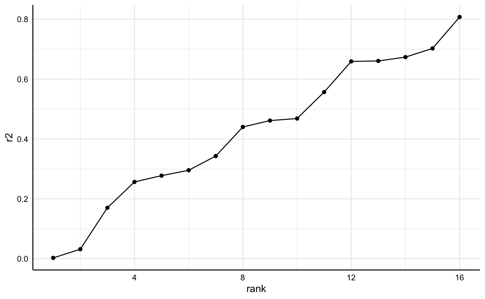

Per default, run_specs() summarizes individual specifications by using broom.mixed::tidy() and “broom::glance()”. For most cases, this provides “sufficient” summary of the relationship of interest and model characteristics. Sometimes, however, it might be useful to investigate specific models in more detail or to investigate a specific parameter that is not provided by the two functions (e.g., r-square). This vignette shows how to access individual models and extract further information from them.
If we want to investigate individual models and particularly all aspects of that model, we need to use run_specs() with the additional argument keep.results = TRUE.
library(specr) library(dplyr) library(purrr) library(ggplot2) library(performance) # Run specification curve analysis results <- run_specs(df = example_data, y = c("y1", "y2"), x = c("x1", "x2"), model = c("lm"), controls = c("c1", "c2"), subsets = list(group1 = unique(example_data$group1), group2 = unique(example_data$group2)), keep.results = TRUE)
For this example, we are going to look at two specific models (same independent variables, all controls, all participants, but different dependent variables).
(y_models <- results %>% filter(x == "x1", controls == "c1 + c2", subsets == "all")) #> # A tibble: 2 x 24 #> x y model controls res estimate std.error statistic p.value #> <chr> <chr> <chr> <chr> <lis> <dbl> <dbl> <dbl> <dbl> #> 1 x1 y1 lm c1 + c2 <lm> 6.17 0.412 15.0 4.70e-42 #> 2 x1 y2 lm c1 + c2 <lm> -0.0545 0.267 -0.204 8.38e- 1 #> # … with 15 more variables: conf.low <dbl>, conf.high <dbl>, #> # fit_r.squared <dbl>, fit_adj.r.squared <dbl>, fit_sigma <dbl>, #> # fit_statistic <dbl>, fit_p.value <dbl>, fit_df <dbl>, fit_logLik <dbl>, #> # fit_AIC <dbl>, fit_BIC <dbl>, fit_deviance <dbl>, fit_df.residual <int>, #> # fit_nobs <int>, subsets <chr>
As you can see, the resulting tibble includes an additional column called “res”. This column includes the entire “model object” and we can use it to further investigate each model.
For example, we can now easily get a full summary of the models and compare individual coefficients and statistics.
y_models %>% pull(res) %>% map(summary) %>% map(coef) #> [[1]] #> Estimate Std. Error t value Pr(>|t|) #> (Intercept) -13.155786 1.2877892 -10.21579 2.305561e-22 #> x1 6.167539 0.4121184 14.96545 4.697951e-42 #> c1 3.305519 0.2120368 15.58937 7.001986e-45 #> c2 5.069924 0.2071211 24.47807 2.353281e-87 #> #> [[2]] #> Estimate Std. Error t value Pr(>|t|) #> (Intercept) -3.4181335 0.8345588 -4.0957372 4.913869e-05 #> x1 -0.0545206 0.2670756 -0.2041392 8.383285e-01 #> c1 3.3246890 0.1374116 24.1951149 5.457463e-86 #> c2 2.3954736 0.1342259 17.8465776 2.162445e-55
Or we could get r-squared values for both models.
This way, we can analyze or compare such statistics across several models.
r2_results <- results %>% filter(subsets == "all") %>% mutate(r2 = map(res, r2), r2 = map_dbl(r2, 1)) %>% arrange(r2) r2_results %>% select(x:controls, r2) #> # A tibble: 16 x 5 #> x y model controls r2 #> <chr> <chr> <chr> <chr> <dbl> #> 1 x1 y2 lm no covariates 0.00263 #> 2 x2 y2 lm no covariates 0.0317 #> 3 x1 y1 lm no covariates 0.170 #> 4 x1 y2 lm c2 0.257 #> 5 x2 y2 lm c2 0.277 #> 6 x2 y1 lm no covariates 0.296 #> 7 x1 y1 lm c1 0.343 #> 8 x1 y2 lm c1 0.440 #> 9 x2 y2 lm c1 0.461 #> 10 x2 y1 lm c1 0.468 #> 11 x1 y1 lm c2 0.557 #> 12 x1 y2 lm c1 + c2 0.659 #> 13 x2 y1 lm c2 0.661 #> 14 x2 y2 lm c1 + c2 0.673 #> 15 x1 y1 lm c1 + c2 0.702 #> 16 x2 y1 lm c1 + c2 0.807
And we can plot comparisons.
r2_results %>% arrange(r2) %>% mutate(rank = 1:n()) %>% ggplot(aes(x = rank, y = r2)) + geom_point() + geom_line() + theme_minimal() + theme(strip.text = element_blank(), axis.line = element_line("black", size = .5), axis.text = element_text(colour = "black"))
